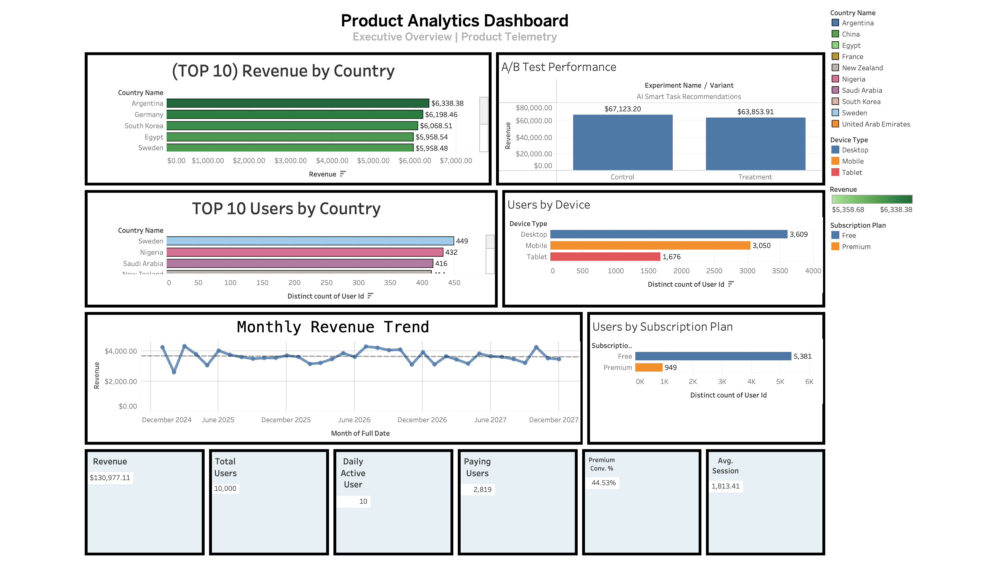
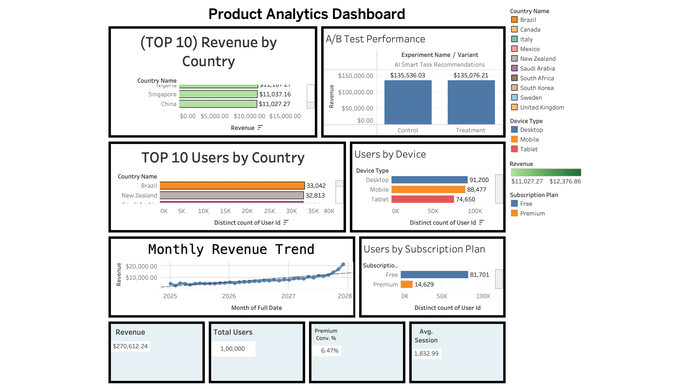
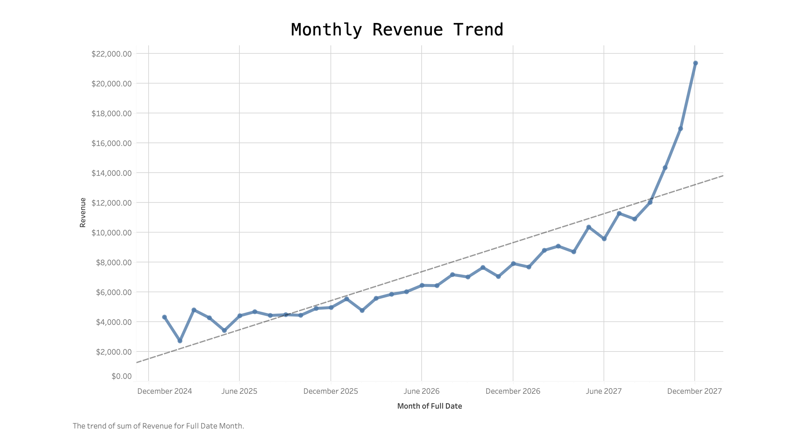
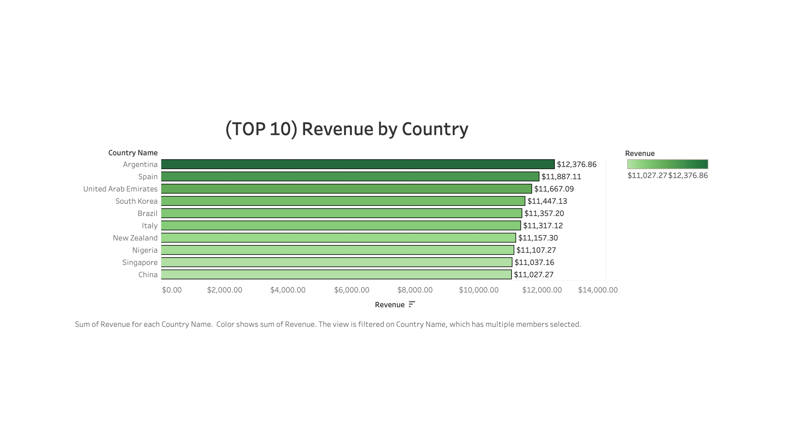
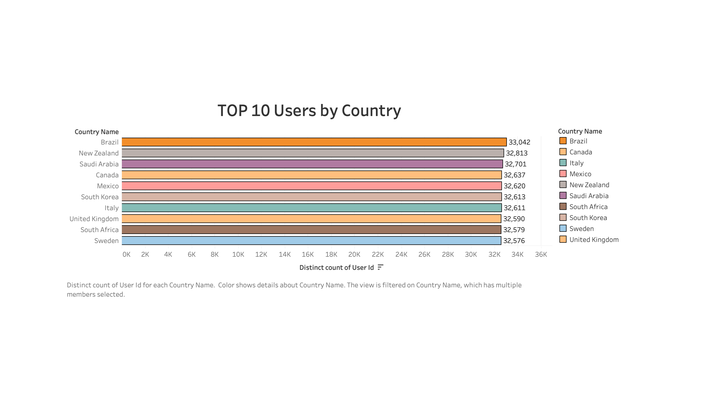
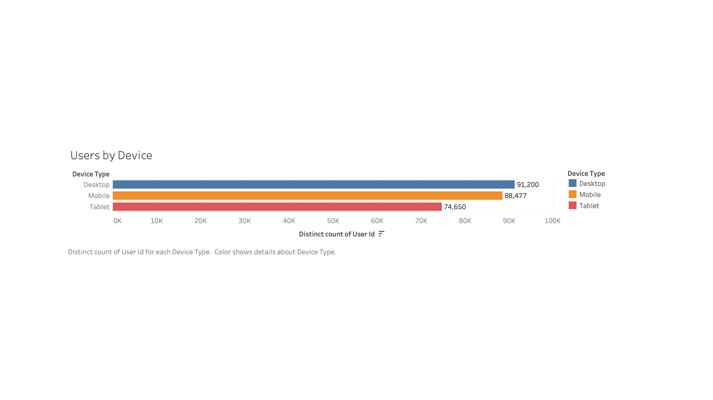
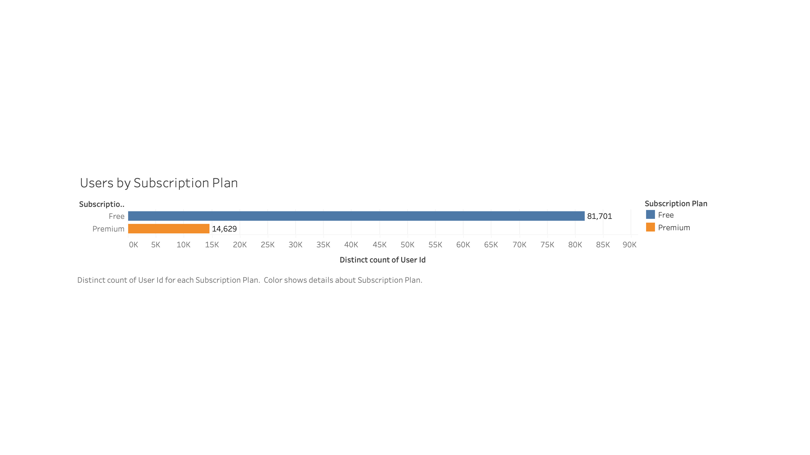

01 · PRESENTATION
Presentation
The project presentation will be embedded here.
02 · PROJECT OVERVIEW
From Data Generation to Product Decision
The experiment progresses from synthetic data generation and SQL analysis to an initial 10K evaluation. When the evidence was not sufficiently conclusive, the experiment was scaled to 100K users and reassessed using the same analytical framework.
10K Experiment — Data Generation
The experiment begins with a 10,000-user synthetic SaaS telemetry dataset, creating the initial population for the Control vs Treatment analysis.
10K Experiment — SQL Analysis
The generated telemetry data is analyzed in MySQL to compare experiment population, task completion, conversion, revenue, and AI feature engagement.
- Experiment population
- Task completion
- Conversion
- Revenue
- AI feature engagement
10K Experiment — Initial Results
The initial Tableau dashboard visualizes the Control vs Treatment results and provides the first evidence for evaluating the AI-powered feature.
The initial evidence was not sufficiently conclusive for a confident product decision.

Scaling the Experiment — 10K → 100K
With the initial evidence still inconclusive, the experiment population was increased to 100,000 users before reassessing the treatment effect.
100K Experiment — Final Results
The final Tableau dashboard provides the scaled Control vs Treatment comparison used to evaluate the AI-powered feature and support the final product decision.

03 · BUSINESS QUESTION
Business Question
Should the SaaS company implement the AI feature based on its impact on conversion, engagement, and user behavior?
Conversion indicates whether the feature supports the desired product outcome. Engagement and behavior help assess how users interact with it beyond the primary outcome.
CONVERSION
Does the AI feature improve the primary product outcome?
ENGAGEMENT
Do users meaningfully interact with the AI feature?
USER BEHAVIOR
Does the feature influence downstream actions such as task completion or payment?
04 · APPROACH / METHODOLOGY
Experiment / Methodology
Existing experience
The control group represents the current SaaS experience without the AI feature.
AI feature enabled
The treatment group receives the AI-powered feature being evaluated.
From data to decision
MySQL, Python, A/B testing, and Tableau support the analysis workflow.
Users are evaluated through control and treatment groups, with behavioral and conversion metrics used to compare the experiences.
The final decision is based on statistical evidence and business relevance, not on directional movement alone.
05 · DATASET
Dataset
The project initially used a 10K-user dataset. That sample did not provide sufficiently clear statistical evidence for a decisive Control vs Treatment conclusion.
The final experiment used 100,000 users in a randomly generated synthetic dataset created with Python. Users were assigned to Control and Treatment groups for the experiment.
The larger synthetic dataset was used to improve the statistical power and precision of the comparison, with the aim of determining more clearly whether the AI feature produced a meaningful difference between the two groups.
The experiment was analyzed through Tableau dashboards at both the initial 10K-user stage and after scaling the dataset to 100K users.
Initial Tableau Dashboard
Explore the original 10K-user experiment dashboard and the initial Control vs Treatment analysis.
View 10K Dashboard →Final Tableau Dashboard
Explore the scaled 100K-user dashboard with the final experiment comparison and broader product analytics.
View 100K Dashboard →Stronger evidence base
The dataset was scaled because the original 10K experiment did not produce a sufficiently clear winner.
Randomly generated
The 100,000-user experiment dataset was generated synthetically in Python and does not represent real customers.
Control vs Treatment
The larger dataset kept the experiment groups consistent while supporting a more precise comparison.
Initial experiment dataset
Control vs Treatment comparison
The 10K sample did not provide a sufficiently decisive conclusion
Scaled synthetic experiment
Larger sample for a more precise comparison
100K Dashboard Snapshot
With the experiment scaled to 100K users, the final Tableau dashboard provides a broader view of the Control vs Treatment experiment alongside revenue, geographic, device, and subscription patterns.

Monthly Revenue Trend — Revenue progression across the observation period.

Revenue by Country — Geographic distribution of revenue across the highest-performing markets.

Users by Country — Distribution of users across the highest-represented countries.

Users by Device — User distribution across desktop, mobile, and tablet.

Users by Subscription Plan — Distribution of users across free and premium plans.
06 · KEY METRICS
Key Metrics
The experiment evaluates the AI feature across three dimensions: conversion, engagement, and user behavior.
Conversion
Measures whether users complete the desired product outcome, using payment activity to compare Control vs Treatment.
Engagement
Measures how actively users interact with the product, including task completion and interaction with the AI feature.
User Behavior
Examines how users respond to the AI feature through actions such as recommendation exposure, acceptance, task completion, and downstream activity.
07 · A/B TEST ANALYSIS
A/B Test Analysis
The analysis compares the Control and Treatment groups across conversion, engagement, revenue, and user-behavior metrics to evaluate the AI feature.
The initial 10K-user experiment did not provide a sufficiently clear basis for a decisive Control vs Treatment conclusion, so the experiment was scaled to a 100K-user synthetic dataset and analyzed again.
The final comparison focuses on the direction and magnitude of the observed differences across the experiment groups. Formal hypothesis testing and confidence intervals were not included in this project.
The final 100K-user analysis compares Control and Treatment across five core dimensions to evaluate the AI feature's observed product impact.
Control vs Treatment user allocation and overall experiment population.
Percentage of users completing at least one task in each experiment group.
Users generating a successful payment event and the resulting conversion rate.
Total revenue and revenue per user across Control and Treatment.
AI recommendation exposure and acceptance among users in the experiment.
These comparisons describe observed differences between the experiment groups. They are intended to support product analysis, not to establish statistical significance or causal impact.
08 · KEY FINDINGS
Key Findings
10K Was Not Conclusive
The initial 10K-user experiment did not provide sufficiently clear evidence for a definitive Control vs Treatment decision.
Expanded to 100K
The experiment was scaled to approximately 100K synthetic users to provide a larger evidence base for the final Control vs Treatment comparison.
Separate Direction from Proof
Observed differences can indicate a directional pattern, but without formal statistical testing they should not be treated as proof of a statistically significant effect.
The project demonstrates how an initially inconclusive experiment can motivate a larger analysis while maintaining appropriate caution in interpreting the results.
09 · BUSINESS IMPACT / CONCLUSION
Business Impact / Conclusion
The analysis provides the SaaS company with a structured framework for evaluating the AI feature across conversion, engagement, revenue, and user behavior.
Scaling the experiment from 10K to 100K users provided a broader evidence base for the Control vs Treatment comparison. However, the analysis remains based on synthetic data and descriptive comparisons rather than formal statistical inference, so the observed differences should be interpreted cautiously.
12 · GITHUB